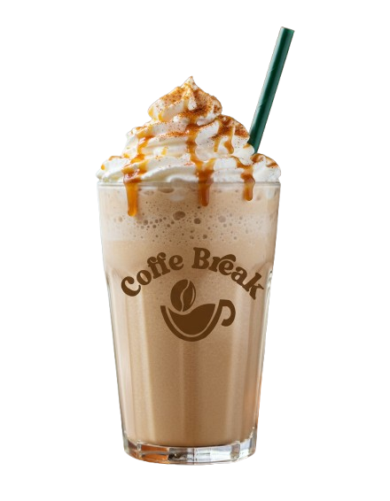
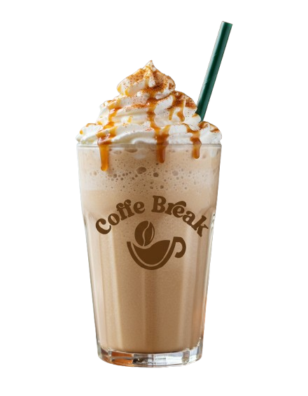

Nuestro Menu

 

LOGO 2
NUESTRA
ESTRELLA
ESTRELLA
Bebida tradicional de EE.UU
que se sirve típicamente
en la temporada de otoño.
que se sirve típicamente
en la temporada de otoño.
Ingredientes
De temporada
- Puré de calabaza- Leche vegetal (leche de almendras o leche de soya) - Especias para pie de calabaza (canela, jengibre, clavo de olor y nuez moscada)
- Jarabe de arce
- Extracto de vainilla
- Café espresso (opcional).
Preparación
Perfecto conocimiento
1. Mezcla todos los ingredeintes en una licuadora.2. Licúa hasta que la mezcla esté suave y cremosa.
3. Calienta la mezcla en una olla a fuego lento.
4. Sirve caliente, cubierto con crema batida y una pizca de canela o nuez moscada
Postres
¡Con un postre mejor!
¿postre?Aroma
¡No lo tomes solo!
Postres...